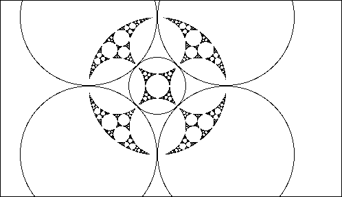

Here the four large circles remain fixed while the middle circle, originally tangent to all four fixed circles, shrinks toward the center.
|  |
| Click the picture to animate. |
While this animation is simple, it does suggest something interesting.
The observed motion toward the edge is repeated on smaller and smaller scales as we look more closely at the edge.
Return to circle inversion animations.